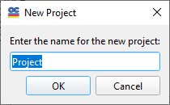

New Problem directory

This dialog allows you to specify the name of the new Problem directory, where the current directory will be cloned. Optionally, you can also specify a different OptiLayer Root directory where the cloned data will be stored.